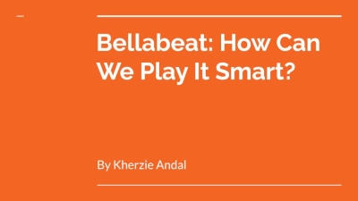
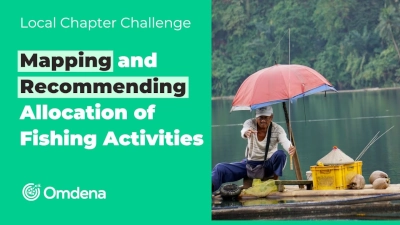

Hello, World!
I’m Kherzie Andal, a data professional and researcher with a deep passion for leveraging data to solve complex challenges. My work spans from computational research to real-world data analysis that drives decision-making.
With expertise in statistical programming, data analytics, and machine learning, I thrive on uncovering insights from data and turning them into actionable strategies. Whether through academic research or industry collaboration, I aim to contribute impactful solutions in the field of data science.
We implemented a parallel Monte Carlo simulation of the 2D Ising model using the checkerboard Metropolis algorithm on both CPU and mobile GPU, benchmarking performance and validating results against Onsager’s analytical solution.
Read Paper
I presented a poster on our Python-based implementation of the checkerboard Metropolis algorithm, highlighting performance trade-offs and validation against Onsager’s solution.
View Talk
I led a Python 3.0 Workshop session on Parallel Computing, where we explored practical techniques to boost performance by breaking down intensive tasks into concurrent processes.
View Talk
I had the privilege of leading a successful Python Basics session at workshop, where we explored practical applications in research and sparked exciting interest in coding.
View Talk
A hypothetical scenario where I’m working at Bellabeat, a high-tech manufacturer of health-focused products for women. In this case study, I’ve analyzed the dataset using R and created a presentation for stakeholders.
View Project
This project was conducted by the Omdena Laguna, Philippines Chapter and led by Heide Mae Balcera.
View ProjectIn statistical physics, the Ising model claims that the physical system of magnets can be theoretically represented by a lattice arrangement of molecules. In this model, every molecule possesses a “spin”, which can align either upwards or downwards concerning an external magnetic field’s direction. We will represent these spins +1 and -1 respectively as shown in the figure below (others represent the alignment as 0 and 1).
Read More